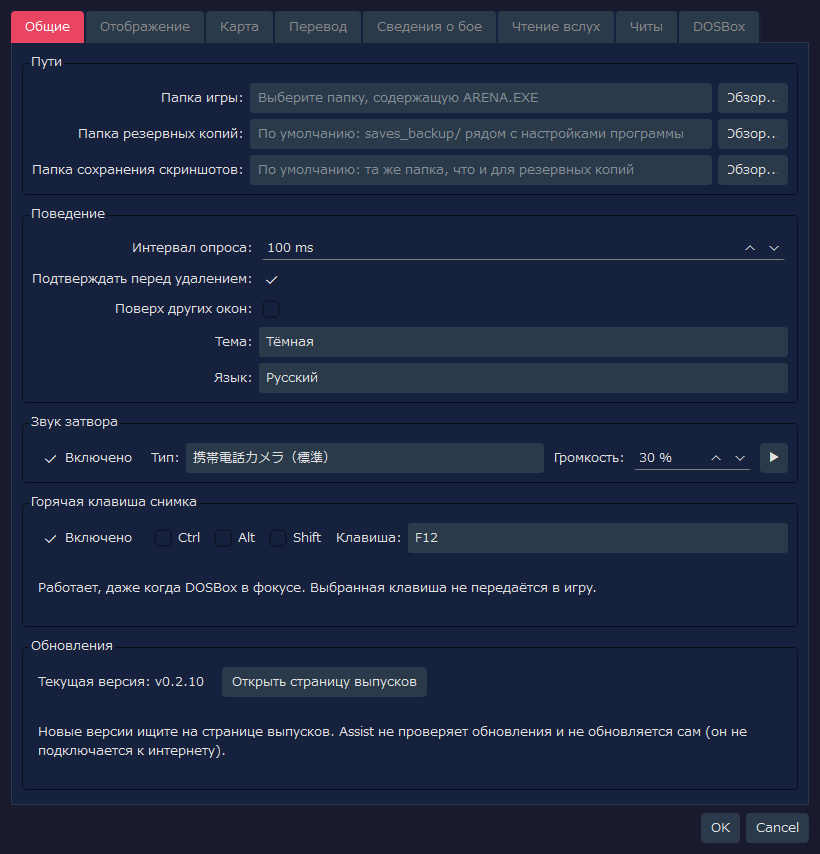
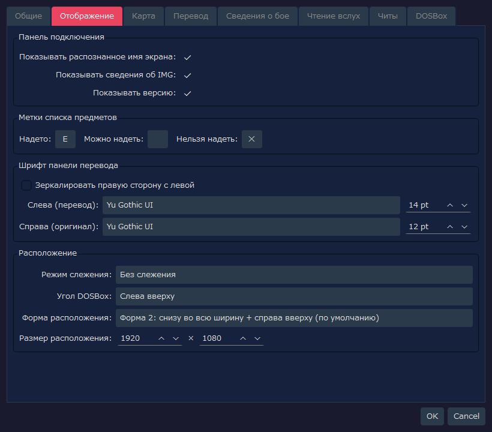
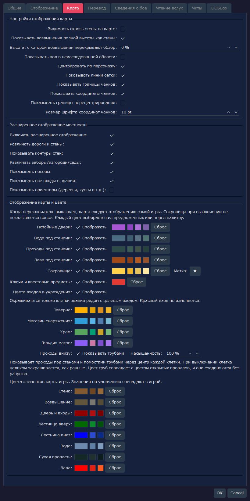
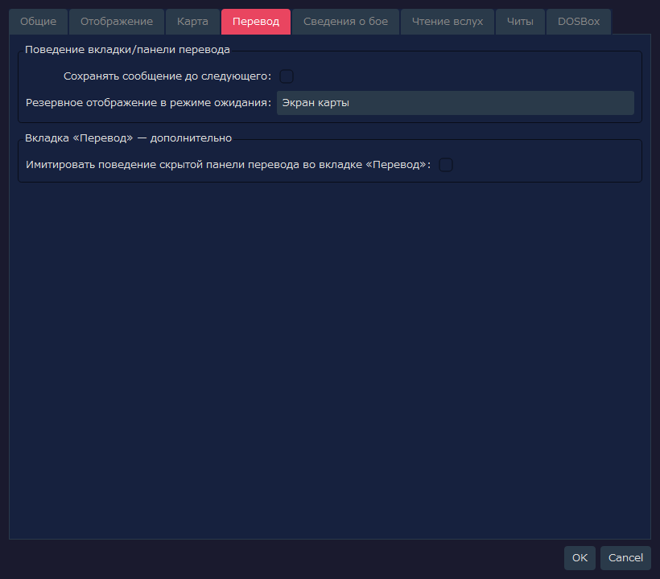
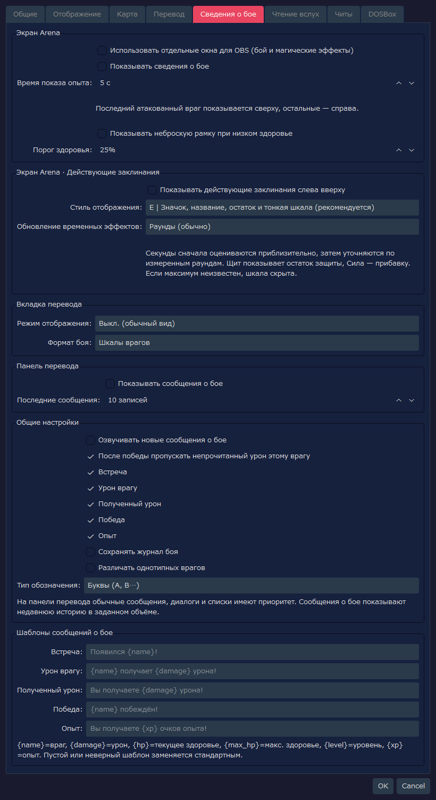
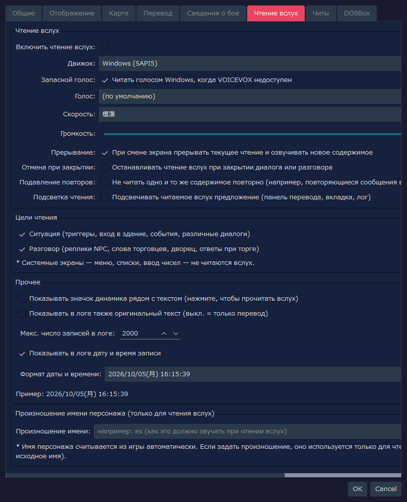
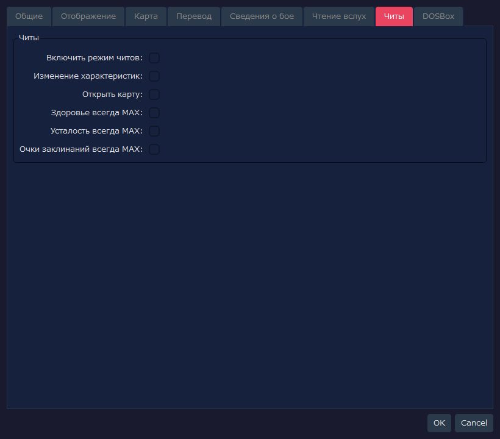
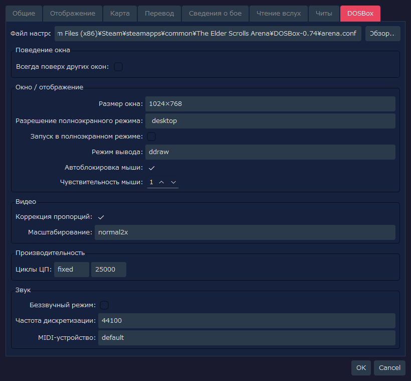

RTESArenaAssist — Настройки
Здесь приведены снимки каждой вкладки окна настроек RTESArenaAssist и описание всех элементов интерфейса.
Изображения сделаны в окне настроек на вашем языке отображения, с настройками по умолчанию и стандартной темой «Тёмная».
Значения на вкладке DOSBox отражают не только файл настроек Assist, но и результат чтения файла arena.conf по пути по умолчанию. Поэтому, если у вас другой arena.conf, показанные значения тоже будут другими.
Содержание
Вкладка «Общие»
На этой вкладке задаются пути, основное поведение, звук затвора и горячая клавиша снимка, а также можно проверить вашу версию.

Пути
| Надпись | Значение по умолчанию | Описание |
|---|
Папка игры: | Пусто | Папка, где лежат ARENA.EXE и файлы сохранений Arena. Пока она не задана, управление сохранениями и чтение игровых данных недоступны |
Папка резервных копий: | Пусто | Куда сохраняются резервные копии сохранений. Если пусто, используется папка saves_backup/ рядом с файлом настроек программы |
Папка сохранения скриншотов: | Пусто | Куда сохраняются снимки экрана. Если пусто, используется та же папка, что и для резервных копий |
Обзор... | - | Выбор каждой из папок |
Поведение
| Надпись | Значение по умолчанию | Описание |
|---|
Интервал опроса: | 100 ms | Период, с которым отслеживаются экран DOSBox и состояние памяти. Чтобы легче ловить короткие сообщения, по умолчанию он небольшой |
Подтверждать перед удалением: | ВКЛ | Показывает диалог подтверждения при удалении снимков и резервных копий |
Поверх других окон: | ВЫКЛ | Показывает главное окно Assist поверх остальных окон |
Тема: | Тёмная | Выбор цветовой темы интерфейса |
Язык: | Автоматически (системный) | Язык интерфейса. Если значение не задано, язык определяется автоматически по языку системы; изменение вступает в силу после перезапуска приложения |
Звук затвора
| Надпись | Значение по умолчанию | Описание |
|---|
Включено | ВКЛ | Воспроизводит звуковой эффект при сохранении снимка экрана |
Тип: | 携帯電話カメラ（標準） (камера телефона, стандартный) | Воспроизводимый звук затвора. Можно выбрать стандартный, укороченный, двойной, с акцентом на высокие частоты или мягкий. Названия в списке показываются по-японски |
Громкость: | 30 % | Громкость звука затвора |
▶ | - | Прослушать выбранный звук затвора |
Горячая клавиша снимка
Снимок можно сохранить простым нажатием клавиши, не убирая фокус с игрового экрана (DOSBox). Удобно для снимков сообщений, исчезающих через несколько секунд.
| Элемент | Значение по умолчанию | Описание |
|---|
Включено | ВКЛ | Использовать снимок по горячей клавише |
Ctrl / Alt / Shift | ВЫКЛ | Включите, если нужно сочетание с клавишей-модификатором |
Клавиша: | F12 | Используемая клавиша. Можно выбрать F5–F12, PrintScreen, Pause, ScrollLock, Insert, Home, End, PageUp, PageDown |
- Нажатая клавиша в игру не передаётся. Клавиши, которые используют игра и DOSBox (F1 / F3 / F4 / F8, Ctrl+F5–F12, Alt+F12, Alt+Pause), выбрать нельзя
- Если другое приложение использует ту же клавишу как горячую, то пока работает эта программа, горячая клавиша того приложения не действует. Выберите другую клавишу, и обе будут работать
- Если клавишу зарегистрировать не удалось, об этом сообщается в строке состояния. В этом случае снимок всё равно можно сделать кнопкой с камерой на панели
Обновления
| Надпись | Значение по умолчанию | Описание |
|---|
Текущая версия: | - | Версия используемого Assist |
Открыть страницу выпусков | - | Открывает в браузере страницу выпусков Assist (список Releases). Есть ли новая версия, проверяйте здесь |
Assist не подключается к интернету, поэтому проверку обновлений и автоматическое обновление не выполняет.
Вкладка «Отображение»
На этой вкладке настраиваются панель подключения, метки снаряжения в списке предметов, шрифт панели перевода и расположение.

Панель подключения
| Надпись | Значение по умолчанию | Описание |
|---|
Показывать распознанное имя экрана: | ВКЛ | Показывает на панели подключения имя текущего распознанного экрана |
Показывать сведения об IMG: | ВКЛ | Показывает на панели подключения сведения об обнаруженном IMG |
Показывать версию: | ВКЛ | Показывает версию приложения на панели подключения и в строке состояния |
Метки списка предметов
| Надпись | Значение по умолчанию | Описание |
|---|
Надето: | Ｅ | Метка из одного символа слева от надетого предмета |
Можно надеть: | Пусто | Метка предмета, который можно надеть. По умолчанию пусто, поэтому ничего не показывается |
Нельзя надеть: | ✕ | Метка из одного символа слева от предмета, который надеть нельзя |
Шрифт панели перевода
| Надпись | Значение по умолчанию | Описание |
|---|
Зеркалировать правую сторону с левой | ВЫКЛ | Если включить, шрифт и размер оригинала становятся такими же, как у перевода |
Слева (перевод): | Шрифт приложения по умолчанию / 14 pt | Шрифт и размер текста перевода. Если имя шрифта не сохранено, выбирается шрифт приложения по умолчанию в вашей среде |
Справа (оригинал): | Шрифт приложения по умолчанию / 12 pt | Шрифт и размер английского оригинала. Синхронизация выключена, поэтому настраивается отдельно от перевода |
Расположение
| Надпись | Значение по умолчанию | Описание |
|---|
Режим слежения: | Без слежения | Определяет, должно ли одно из окон, DOSBox или Assist, следовать за другим при перемещении |
Угол DOSBox: | Слева вверху | Опорный угол экрана, в который ставится DOSBox при одноразовом расположении и в режиме расположения |
Форма расположения: | Форма 2: снизу во всю ширину + справа вверху (по умолчанию) | Форма разделения области между DOSBox и панелями Assist. Форма 2 — стандартное расположение, использующее правый верхний угол и всю нижнюю ширину |
Размер расположения: | 1920 x 1080 | Размер всего холста в режиме расположения |
Вкладка «Карта»
На этой вкладке настраиваются карта исследования и расширенное отображение местности.

Настройки отображения карты
| Надпись | Значение по умолчанию | Описание |
|---|
Видимость сквозь стены на карте: | ВЫКЛ | Когда выключено, неисследованная область за стеной на карте не записывается. Если включить, как в оригинальной Arena, записывается и область за стеной |
Показывать возвышения полной высоты как стены: | ВКЛ | Возвышения, заполняющие пространство от пола до потолка, показываются цветом стены. Меняется только классификация отображения; на перекрытие линии обзора это не влияет. Возвышения неполной высоты по-прежнему показываются как возвышения |
Высота, с которой возвышения перекрывают обзор: | 0 % | Если принять высоту потолка за 100%, возвышения, верх которых достигает этой высоты или выше, перекрывают линию обзора на карте. При 0% обзор перекрывают все возвышения |
Показывать пол в неисследованной области: | ВЫКЛ | Когда выключено, цвет пола показывается только на открытых клетках, а форма неисследованной области скрыта. Когда включено, вся карта заливается цветом свитка |
Центрировать по персонажу: | ВКЛ | При движении персонажа карта автоматически следует за ним, оставляя его в центре. Пока персонаж стоит, карту можно сдвигать вручную |
Показывать линии сетки: | ВКЛ | Показывает линии сетки по границам клеток |
Показывать границы чанков: | ВКЛ | На карте местности выделяет границы чанков по 64 клетки |
Показывать координаты чанков: | ВКЛ | Показывает на карте местности координаты каждого чанка, помогая ориентироваться |
Показывать границы перецентрирования: | ВЫКЛ | Показывает пунктиром границы перецентрирования на карте местности. Вспомогательное отображение для изучения положения и проверки |
Размер шрифта координат чанков: | 10 pt | Размер текста подписей с координатами чанков |
Расширенное отображение местности
| Надпись | Значение по умолчанию | Описание |
|---|
Включить расширенное отображение: | ВКЛ | Главный переключатель расширенного отображения карты местности. Если выключить, отображение становится близким к игровой автокарте |
Различать дороги и стены: | ВКЛ | Проходимые дороги и непроходимые части (здания, стены) рисуются разными цветами |
Показывать контуры стен: | ВКЛ | Показывает контуры стен и рельеф типа edge |
Различать заборы/изгороди/сады: | ВКЛ | Различает соединительными линиями рельеф типа edge: заборы, изгороди, сады и т. п. |
Показывать посевы: | ВКЛ | Показывает посевы (кукурузу, поля и т. п.) особым цветом или знаком |
Показывать все входы в здания: | ВКЛ | Входы в дома, таверны, храмы, городские ворота и т. п. тоже показываются красным. Входы в склепы, башни и подземелья показываются красным независимо от этой настройки |
Показывать ориентиры (деревья, кусты и т.д.): | ВЫКЛ | Накладывает упрощённые знаки деревьев, кустов, камней, могил, руин и т. п. Их много, и карта становится трудночитаемой, поэтому по умолчанию выключено |
Отображение карты и цвета
Игровая карта рисует проходы под стенами и подобное, не различая их. Здесь задаётся, различать ли их при рисовании, и цвет каждого элемента. Если выключить переключатель «Отображать» в строке, этот элемент возвращается к отображению игровой карты (сокровища при выключении не показываются вовсе).
| Надпись | Значение по умолчанию | Описание |
|---|
Потайные двери: | ВКЛ | Показывает обнаруженные потайные двери особым цветом. Пока дверь не обнаружена, она остаётся стеной |
Вода под стенами: | ВКЛ | Показывает водные каналы под стенами особым цветом. Не показывается, пока вы не пройдёте там на самом деле |
Проходы под стенами: | ВКЛ | Показывает проходы под стенами. Не показывается, пока вы не пройдёте там на самом деле |
Лава под стенами: | ВКЛ | Показывает лаву под стенами особым цветом. Не показывается, пока вы не пройдёте там на самом деле |
Сокровища: | ВКЛ | Накладывает метку на место, где получено сокровище. Символ метки можно изменить в поле справа. Если на вкладке «Читы» включено «Открыть карту», показываются все места с сокровищами независимо от того, получены ли они |
Ключи и квестовые предметы: | ВКЛ | Среди сокровищ показывает метки ключей и квестовых предметов другим цветом. Если выключить, они показываются тем же цветом, что и сокровища. Если выключены сокровища, не показываются |
Цвета входов в учреждения: | ВКЛ | На карте города заменяет цвет клеток здания, примыкающих ко входу в таверну, магазин снаряжения, храм и гильдию магов, на цвет данного учреждения. Цвет красного входа не меняется. Цвет каждого учреждения можно изменить в полях ниже |
Проходы внизу: | Показывать трубами / Насыщенность 100% | Показывает проходы под стенами и возвышениями трубой через центр клетки. Если выключить, клетка целиком закрашивается цветом, как раньше. Цвет трубы совпадает с цветом провала, и они соединяются без разрыва. Если уменьшить Насыщенность, труба становится менее заметной |
Щёлкнув по образцу цвета справа от элемента, можно выбрать любой цвет. Маленькие кнопки рядом — удобные готовые цвета, а Сброс возвращает исходный цвет. Так же можно менять цвета исходных элементов игры: стен, возвышений, дверей и входов, лестниц (вверх и вниз), воды, сухих пропастей и лавы (по умолчанию — те же цвета, что в игре).
Вкладка «Перевод»
На этой вкладке настраивается вспомогательное отображение панели перевода и вкладки «Перевод».

Поведение вкладки/панели перевода
| Надпись | Значение по умолчанию | Описание |
|---|
Сохранять сообщение до следующего: | ВЫКЛ | Определяет, оставлять ли на панели перевода сообщения триггеров и взаимодействия с объектами, пока не придёт следующее сообщение |
Резервное отображение в режиме ожидания: | Экран карты | Выбирает, что показывать во всей вкладке «Перевод», когда идёт исследование и текста перевода нет. По умолчанию приоритет у экрана карты |
Вкладка «Перевод» — дополнительно
| Надпись | Значение по умолчанию | Описание |
|---|
Имитировать поведение скрытой панели перевода во вкладке «Перевод»: | ВЫКЛ | Если включить, результаты перевода и сообщения диалогов показываются на вкладке «Перевод», как если бы панель перевода была скрыта. Дополнительная настройка для проверки |
Вкладка «Сведения о бое»
Здесь отдельно настраивается, где показывать сведения о бое и действующих заклинаниях. Новые функции показа, чтения вслух и сохранения по умолчанию выключены. Значения, сохранённые в прежних сборках разработки, переносятся как есть. Тексты поддерживаются на японском, английском, испанском, немецком, французском, итальянском и русском языках.

Экран Arena
| Элемент | Значение по умолчанию | Описание |
|---|
Использовать отдельные окна для OBS (бой и магические эффекты) | ВЫКЛ | Объединяет сведения о бое и действующие заклинания в одно окно, которое можно выбрать в захвате окна OBS |
Показывать сведения о бое | ВЫКЛ | Последнего врага, с которым шёл обмен ударами и который сейчас виден, показывает вверху экрана, а остальных живых врагов, с которыми уже была встреча, — справа, даже если они вне поля зрения. Можно следить за здоровьем, усталостью, очками заклинаний, нанесённым уроном и победами. Полученный урон показывается у нижнего края области исследования |
Время показа опыта | 5 с | Показывает полученный опыт справа внизу в момент получения и убирает каждую рамку через заданное число секунд. Если опыт получен несколько раз подряд, старые рамки сдвигаются влево (1–60 секунд) |
Показывать неброскую рамку при низком здоровье | ВЫКЛ | Когда здоровье опускается до заданной доли или ниже, края экрана исследования слабо мигают. Можно включить, даже если не используется показ врагов в сведениях о бое |
Порог здоровья | 25% | Доля, с которой начинается показ рамки при низком здоровье (1–99% от максимального здоровья) |
Показ полученного урона автоматически исчезает примерно через 5 секунд после возникновения. Видимость врагов определяется одинаково в любом месте. Если карта или координаты не определены, враги не показываются предположительно.
Чтобы записывать с помощью OBS, включите этот параметр, затем в «Захвате окна» выберите RTESArenaAssist オーバーレイ (так называется окно; его название показывается по-японски), разрешите прозрачность и наложите поверх игрового видео. Сведения о бое и действующие заклинания попадают в один источник.
Экран Arena · Действующие заклинания
| Элемент | Значение по умолчанию | Описание |
|---|
Показывать действующие заклинания слева вверху | ВЫКЛ | Показывает состояние эффектов «Свет», «Щит», усиления Силы, сопротивления огню и левитации |
Стиль отображения | E | Выбор из: A «Название и остаток», B «Название и шкала», C «Значок и шкала», D «Значок и круговое затемнение», E «Значок, название, остаток и тонкая шкала (рекомендуется)», F «Компактный индикатор» |
Обновление временных эффектов | Раунды (обычно) | Выбирает, обновлять ли «Свет», сопротивление огню и левитацию по раундам или по приблизительному числу секунд, раз в секунду. Секунды корректируются по интервалу хода в игре, поэтому при изменении скорости хода (например, в DETAIL) коэффициент не обязательно постоянен |
Щит показывает остаток защиты, Сила — прибавку. При подключении посреди игры, когда максимум узнать нельзя, шкала может не показываться. Показ секунд приблизителен; окончание эффекта определяется по состоянию в игре.
Вкладка перевода
| Элемент | Значение по умолчанию | Описание |
|---|
Режим отображения | Выкл. (обычный вид) | Выбор: оставить обычное отображение / использовать обычное отображение вместе со сведениями о бое / показывать сведения о бое на весь экран |
Формат боя | Шкалы врагов | Если сведения о бое показываются, выбирает текст или шкалы врагов |
Панель перевода
| Элемент | Значение по умолчанию | Описание |
|---|
Показывать сообщения о бое | ВЫКЛ | Показывает на панели перевода тексты боя. Если выводятся прежние сообщения, разговоры или списки, приоритет у них |
Последние сообщения | 10 записей | Показывает от 1 до 50 последних текстов боя. Когда число превышено, старый текст убирается, а новый добавляется |
Общие настройки и сообщения
| Элемент | Значение по умолчанию | Описание |
|---|
Озвучивать новые сообщения о бое | ВЫКЛ | Если чтение вслух включено в целом, читает новые тексты боя в порядке возникновения. Недавние одинаковые тексты не исключаются, и следующий урон не обрывает предыдущее чтение |
После победы пропускать непрочитанный урон этому врагу | ВКЛ | При победе обрывает воспроизводимое и непрочитанное чтение об уроне, нанесённом этому врагу и полученном от него. Чтение для других врагов продолжается |
Сохранять журнал боя | ВЫКЛ | Сохраняет историю боя отдельно от обычного лога. Переключатель на вкладке «Лог» показывается, только когда есть записи |
Различать однотипных врагов | ВЫКЛ | Только если есть несколько врагов с одним именем, добавляет после имени различающий знак |
Тип обозначения | Буквы (A, B…) | Выбор: буквы (A, B…) или числа (1, 2…) |
Шаблоны сообщений о бое | Стандартные тексты для каждого языка | Редактирует тексты для встречи, урона врагу, урона самому себе, победы и опыта. Пустое поле или недопустимая подстановка заменяются стандартным текстом |
Вкладка «Чтение вслух»
На этой вкладке настраиваются чтение перевода вслух, цели чтения, показ лога и произношение имени персонажа.

Чтение вслух
| Надпись | Значение по умолчанию | Описание |
|---|
Включить чтение вслух: | ВЫКЛ | Включает функцию чтения перевода вслух в целом |
Движок: | Windows (SAPI5) | Выбор движка чтения. VOICEVOX можно выбрать, если запущен локальный движок VOICEVOX |
Запасной голос: | ВКЛ | Если выбран VOICEVOX и он недоступен, непрочитанные фразы читаются голосом Windows. Если выключить, они не читаются |
Голос: | (по умолчанию) | Показывается, когда выбран движок Windows (SAPI5). Используемый голос SAPI. Значение «(по умолчанию)» означает голос по умолчанию в ОС |
Персонаж: | Персонаж со стилем ID 0 | Показывается, когда выбран движок VOICEVOX. Персонаж VOICEVOX, который используется для чтения |
Стиль: | Стиль ID 0 | Показывается, когда выбран движок VOICEVOX. Стиль голоса выбранного персонажа |
🔊 Проверить | - | Показывается, когда выбран движок VOICEVOX. Пробно читает короткую фразу выбранным персонажем и стилем |
Скорость: | 標準 (стандартная) | Скорость чтения. Значение в списке показывается по-японски |
Громкость | 100 | Громкость чтения. Задаётся в диапазоне от 0 до 100 |
Прерывание: | ВКЛ | При смене экрана прерывает предыдущее чтение и читает новое содержимое |
Отмена при закрытии: | ВЫКЛ | При закрытии диалога или разговора останавливает идущее чтение |
Подавление повторов: | ВЫКЛ | Не читает одно и то же содержимое повторно (например, повторяющиеся сообщения в подземелье). В лог они записываются |
Подсветка чтения: | ВЫКЛ | Подсвечивает цветом читаемую фразу (панель перевода, вкладка «Перевод», лог) |
Если VOICEVOX не найден, показывается сообщение «Запустите VOICEVOX, чтобы выбрать его (127.0.0.1:50021).». Запустите VOICEVOX и снова откройте окно настроек, и можно будет выбрать персонажа и стиль.
Цели чтения
| Надпись | Значение по умолчанию | Описание |
|---|
Ситуация (триггеры, вход в здание, события, различные диалоги) | ВКЛ | Читаются тексты, описывающие ситуацию: триггеры, вход в здание, события, различные диалоги |
Разговор (реплики NPC, слова торговцев, дворец, ответы при торге) | ВКЛ | Читаются тексты разговоров: ответы NPC, реплики торговцев, дворец, ответы при торге |
Системные экраны — меню, списки, ввод чисел — вслух не читаются.
Прочее / лог
| Надпись | Значение по умолчанию | Описание |
|---|
Показывать значок динамика рядом с текстом (нажмите, чтобы прочитать вслух) | ВЫКЛ | Выводит рядом с показываемым текстом значок динамика для чтения по щелчку |
Показывать в логе также оригинальный текст (выкл. = только перевод) | ВЫКЛ | В журнал перевода добавляется и английский оригинал. Когда выключено, показывается только перевод |
Макс. число записей в логе: | 2000 | Предельное число сохраняемых записей лога. Старые записи сверх этого числа удаляются автоматически |
Показывать в логе дату и время записи | ВКЛ | Показывает у записей лога дату и время записи |
Формат даты и времени: | yyyy/MM/dd(aaa) HH:mm:ss | Формат даты и времени в логе. Можно выбрать готовый или собственный формат |
Произношение имени персонажа
| Надпись | Значение по умолчанию | Описание |
|---|
Произношение имени: | Пусто | Имя персонажа, автоматически полученное из игры, заменяется указанным произношением только при чтении вслух. В отображении и логе остаётся исходное имя |
Вкладка «Читы»
На этой вкладке настраиваются изменение игровых значений и вспомогательные функции вроде «всегда MAX».

| Надпись | Значение по умолчанию | Описание |
|---|
Включить режим читов: | ВЫКЛ | Главный переключатель всех функций-читов. Если включить только его, ничего не изменится, пока не включены подпункты |
Изменение характеристик: | ВЫКЛ | Разрешает изменение характеристик, например редактирование значений характеристик |
Открыть карту: | ВЫКЛ | При включённых читах показывает карту целиком |
Здоровье всегда MAX: | ВЫКЛ | При включённых читах, если текущее здоровье ниже максимума, возвращает его к максимуму |
Усталость всегда MAX: | ВЫКЛ | При включённых читах возвращает текущую усталость к максимуму |
Очки заклинаний всегда MAX: | ВЫКЛ | При включённых читах возвращает текущие очки заклинаний к максимуму |
Вкладка DOSBox
На этой вкладке считывается arena.conf DOSBox, и настраиваются отображение окна, видео, производительность и звук.

Файл настроек / поведение окна
| Надпись | Значение по умолчанию | Описание |
|---|
Файл настроек | arena.conf по пути по умолчанию | Файл настроек DOSBox. Если настройка Assist пуста, по пути по умолчанию читается стандартное размещение версии Arena для Steam |
Обзор... | - | Выбор любого файла arena.conf |
Всегда поверх других окон: | ВЫКЛ | Показывает окно DOSBox поверх остальных окон |
Окно / отображение
| Надпись | Значение по умолчанию | Описание |
|---|
Размер окна: | 1024×768 | windowresolution. Выбирается из готовых вариантов; при выборе произвольного значения редактируются числовые поля W/H |
Разрешение полноэкранного режима: | desktop | fullresolution. Задаёт разрешение в полноэкранном режиме |
Запуск в полноэкранном режиме: | ВЫКЛ | fullscreen. Определяет, запускать ли DOSBox в полноэкранном режиме |
Режим вывода: | ddraw | output. Способ вывода изображения DOSBox |
Автоблокировка мыши: | ВКЛ | autolock. Автоматически захватывает мышь внутри экрана DOSBox |
Чувствительность мыши: | 100 | sensitivity. Чувствительность мыши внутри DOSBox |
Видео
| Надпись | Значение по умолчанию | Описание |
|---|
Коррекция пропорций: | ВКЛ | aspect. Корректирует соотношение сторон изображения |
Масштабирование: | normal2x | scaler. Фильтр увеличения изображения DOSBox |
Производительность
| Надпись | Значение по умолчанию | Описание |
|---|
Циклы ЦП: | fixed 25000 | cycles. Задаёт скорость эмуляции ЦП. При fixed доступно числовое поле справа |
Звук
| Надпись | Значение по умолчанию | Описание |
|---|
Беззвучный режим: | ВЫКЛ | nosound. Отключает звук DOSBox |
Частота дискретизации: | 44100 | rate. Частота дискретизации микшера |
MIDI-устройство: | default | mididevice. Устройство, используемое для воспроизведения MIDI |